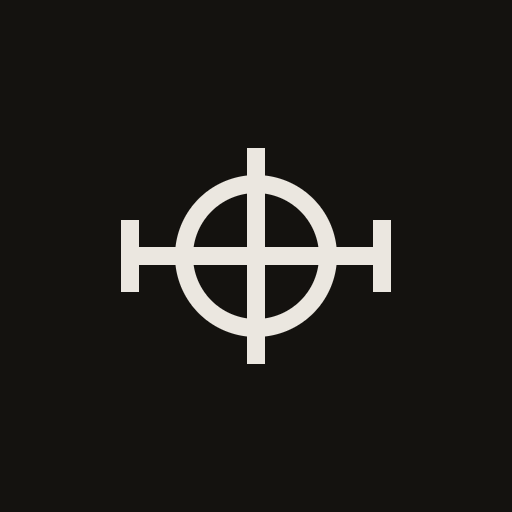
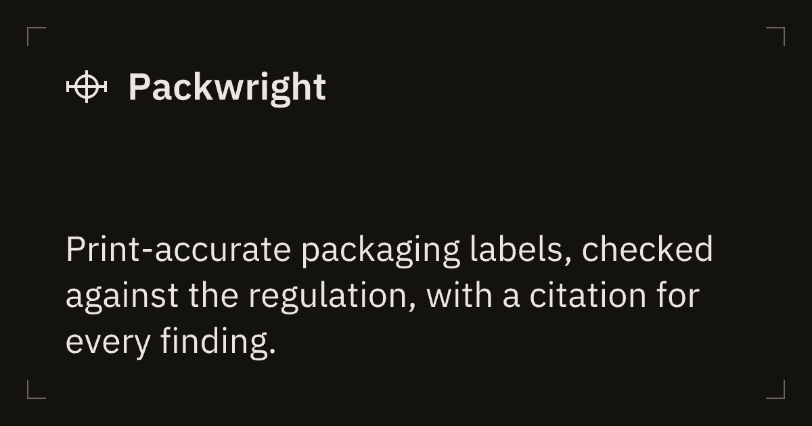

The registration target on a dimension line, with 25% ticks. All files sit in brand/. Inks are chrome-100 #ebe7e0 for dark grounds, chrome-950 #14120f for light grounds, and black for one-color print.
WCAG 2.2 AA non-text contrast requires 3:1. Every pairing clears it by a factor of four or more. The thinnest element is the 2-unit stroke, 1 px at 16 px.
IBM Plex Sans SemiBold at 28 units beside the 32-unit mark, 16 apart, cap height centered on the mark. This is the 14 px masthead lockup at 2×; in the app header, keep the live text and use mark-16.svg with an 8 px gap.

On the 180, 192 and 512 icons the farthest point of the mark, the outer corner of a tick, sits at most 29% of the icon's width from the center. A circle crop keeps everything within 50%, and the maskable safe zone within 40%, so all three can be declared "purpose": "any maskable". Each mark is drawn at a whole-number scale of the master so strokes land on whole pixels.
.pw-loader { animation: pw-turn 2.4s linear infinite; }
@keyframes pw-turn { to { transform: rotate(360deg); } }
@media (prefers-reduced-motion: reduce) { .pw-loader { animation: none; } }
<span class="pw-loader" aria-hidden="true"></span> <span>Loading</span>

<link rel="icon" href="/favicon.svg" type="image/svg+xml"> <link rel="icon" href="/icon-32.png" sizes="32x32" type="image/png"> <link rel="icon" href="/icon-16.png" sizes="16x16" type="image/png"> <link rel="apple-touch-icon" href="/apple-touch-icon.png"> <meta property="og:image" content="https://…/og-image.png"> <meta property="og:image:width" content="1200"> <meta property="og:image:height" content="630"> <meta name="twitter:card" content="summary_large_image">